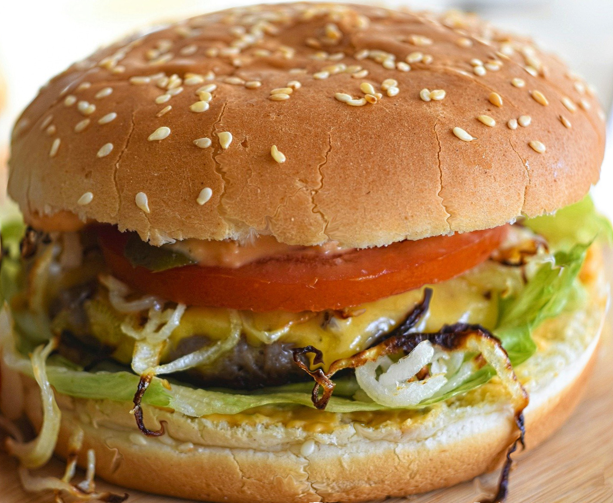

Burger Recipe
Back to Home

A Freshly Cooked burger
A burger is a sandwich built around a savory patty—often grilled beef—tucked into a soft bun. It’s commonly layered with cheese, crisp lettuce, tomato, onion, pickles, and sauces like ketchup, mustard, or mayo: warm, juicy, salty, and messy in the best way.
Ingredients:
- 1 lb ground beef
- 4 hamburger buns
- 4 slices of cheese (optional)
- Lettuce, tomato, onion, pickles (optional)
- Ketchup, mustard, mayo (optional)
- Salt and pepper to taste
Instructions:
- Preheat your grill or skillet to medium-high heat.
- Divide the ground beef into 4 equal portions and shape them into patties. Season both sides with salt and pepper.
- Cook the patties for about 3-4 minutes on each side for medium doneness, or until they reach your desired level of doneness.
- If using cheese, place a slice on each patty during the last minute of cooking to melt.
- Toast the hamburger buns on the grill or in a skillet until lightly browned.
- Assemble the burgers by placing the cooked patties on the bottom buns, then add your desired toppings and condiments. Top with the other half of the bun.
- Serve immediately and enjoy!